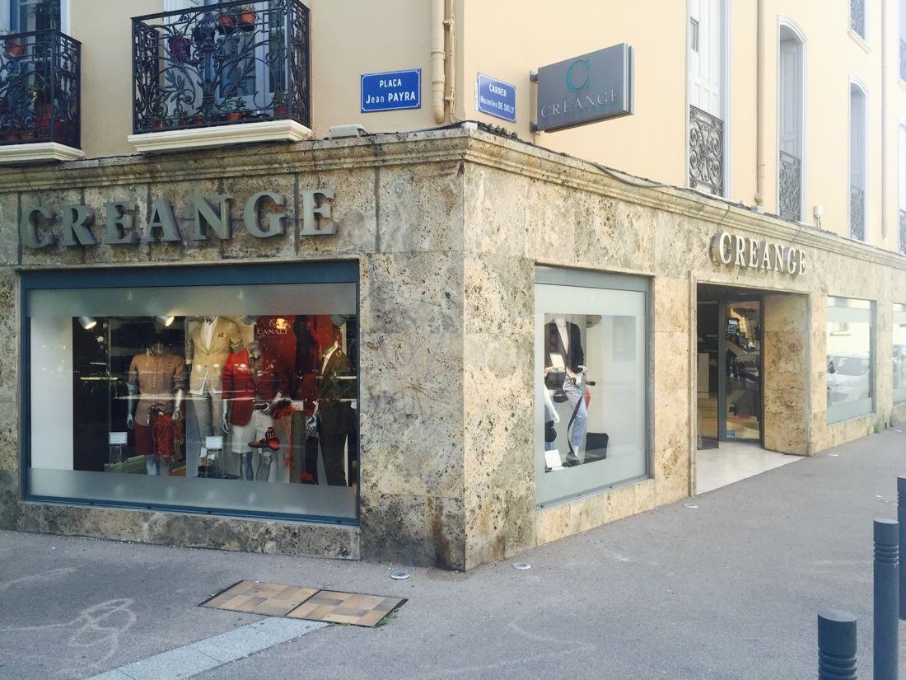
À propos de nous
À propos de Maison Créange
Le pilier de la mode masculine depuis 1875 à Perpignan.
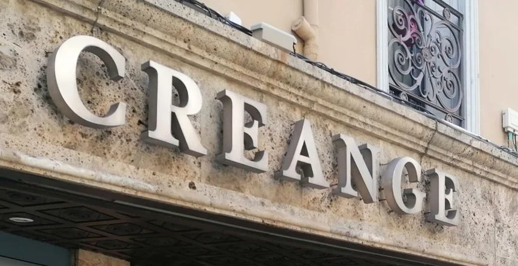
I · Histoire et héritage
Notre histoire
Tradition et innovation
Depuis 1875, Maison Créange se positionne comme un leader dans le domaine de la mode masculine et des accessoires à Perpignan. Nous nous engageons à offrir des produits de qualité, alliant tradition et modernité, afin que chaque client trouve son style unique.
-
1875
Une maison familiale
L'histoire de Créange commence à Perpignan.
-
Depuis
Élégance et raffinement
Une collection de prêt-à-porter pour hommes qui allie modernité et tradition.
-
Aujourd'hui
9 rue Maximilien de Sully
Prêt-à-porter, tenues de cérémonie, sportswear chic et accessoires.
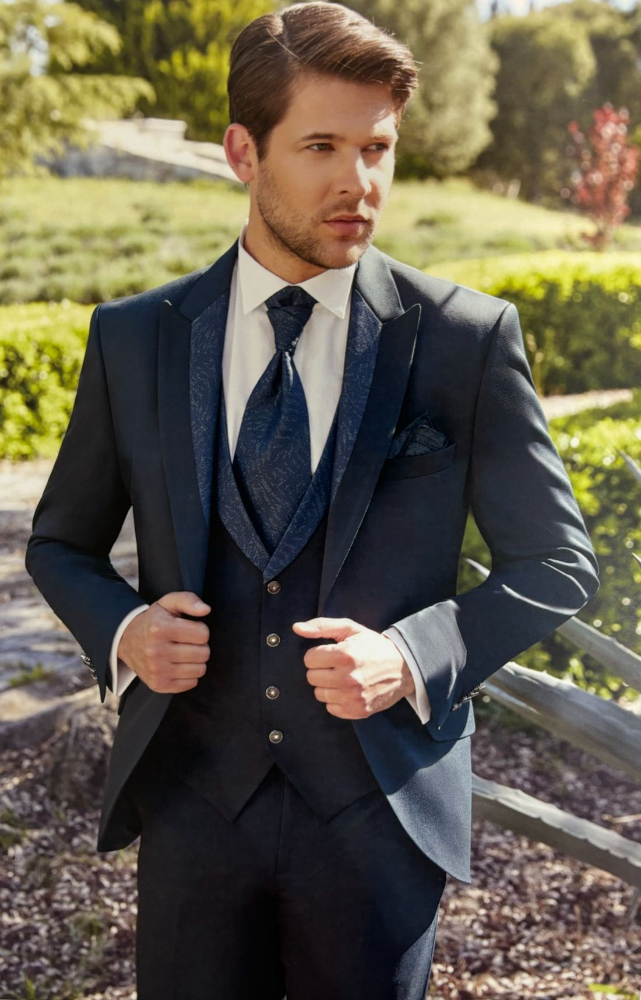
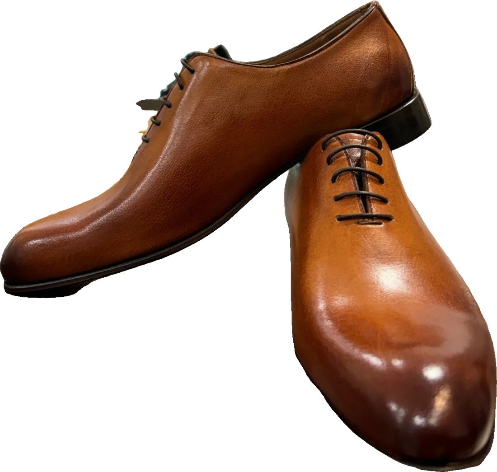
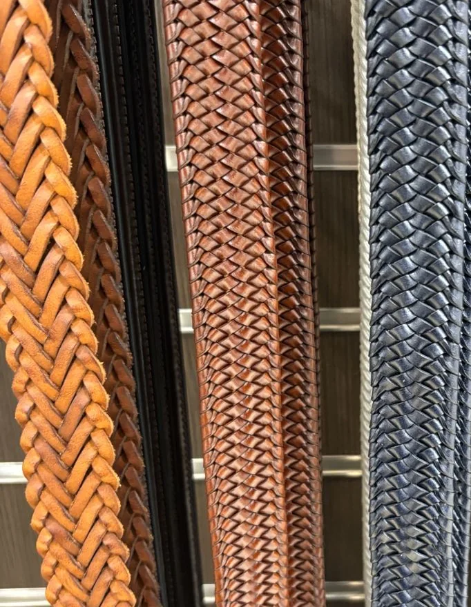
II · La sélection
Une passion pour la mode à l'italienne
Notre équipe dédiée sélectionne des pièces de qualité supérieure, parfaites pour les cérémonies et les occasions spéciales, jusqu'aux chaussures italiennes en cuir.
En tant que multimarques, nous vous proposons une vaste gamme de vêtements qui répondent aux exigences des hommes modernes, combinant sophistication et confort.
La qualité est au cœur de notre philosophie.
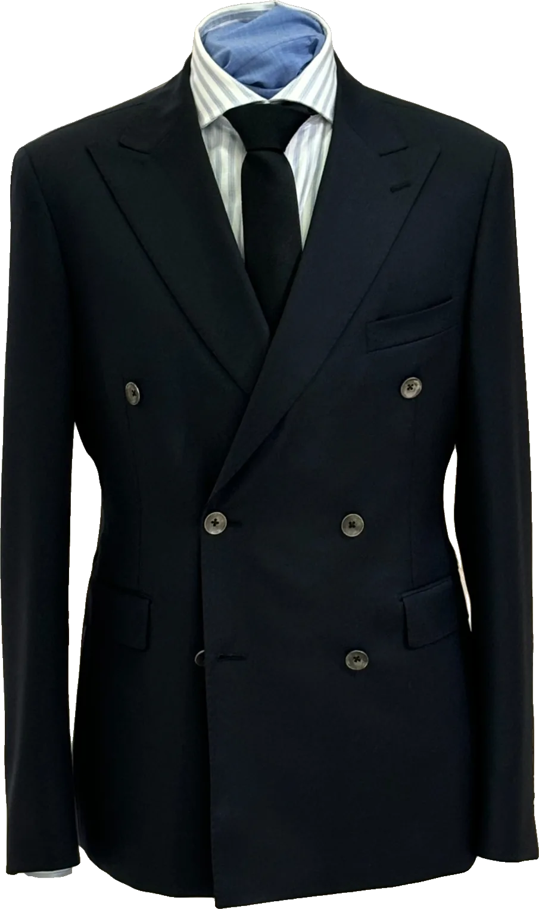
III · Savoir-faire
Un ajustementparfait
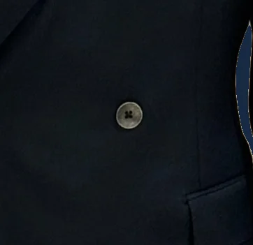
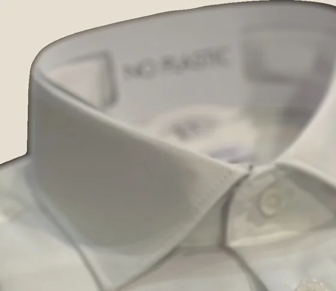
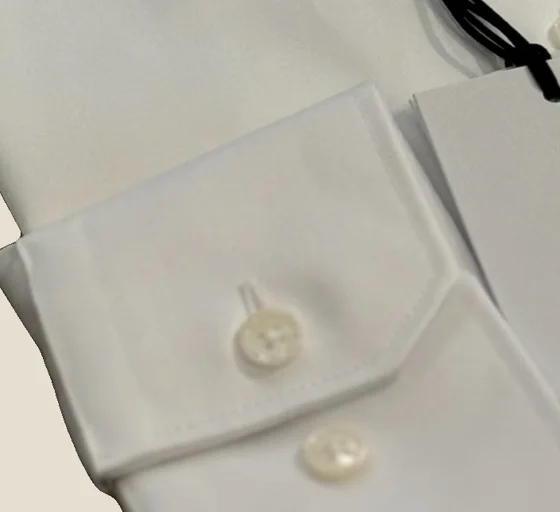
Notre service de retouche personnalisé garantit un ajustement parfait, que vous optiez pour un look haut de gamme ou du sportswear chic.
Nous parler de votre retouche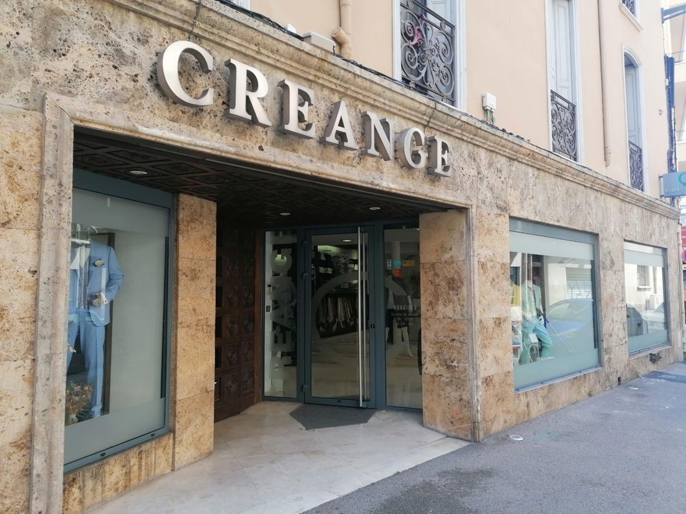
IV · La visite
Rejoignez-nous à Maison Créange
Votre style, notre passion
Venez découvrir l'élégance raffinée et le service personnalisé que nous offrons. Que ce soit pour un costume, une tenue décontractée ou des accessoires, notre équipe est prête à vous aider à faire le meilleur choix.
- Adresse
- 9 rue Maximilien de Sully
66000 Perpignan - Horaires
- Du lundi au samedi
10h – 12h30 et 14h – 19h
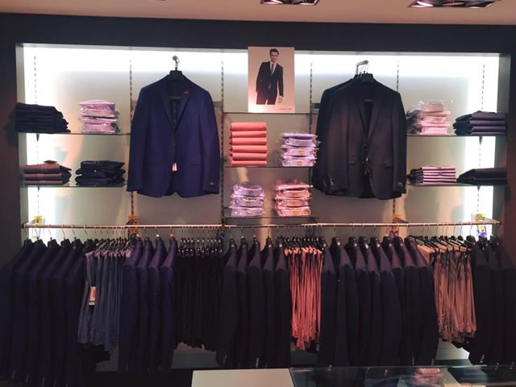